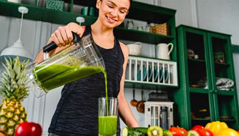
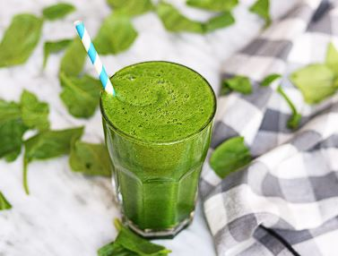

1. Ingredientes

Espinaca, manzana verde, pepino, limón y agua. Son ingredientes naturales que ayudan a mejorar la digestión.
2. Preparación

Lava y corta los ingredientes. Licúa todo hasta obtener una mezcla homogénea.
3. Beneficios

Bajo en calorías, mejora el metabolismo y aporta energía.
4. Resultado Final

Sirve y consume inmediatamente para aprovechar los nutrientes.